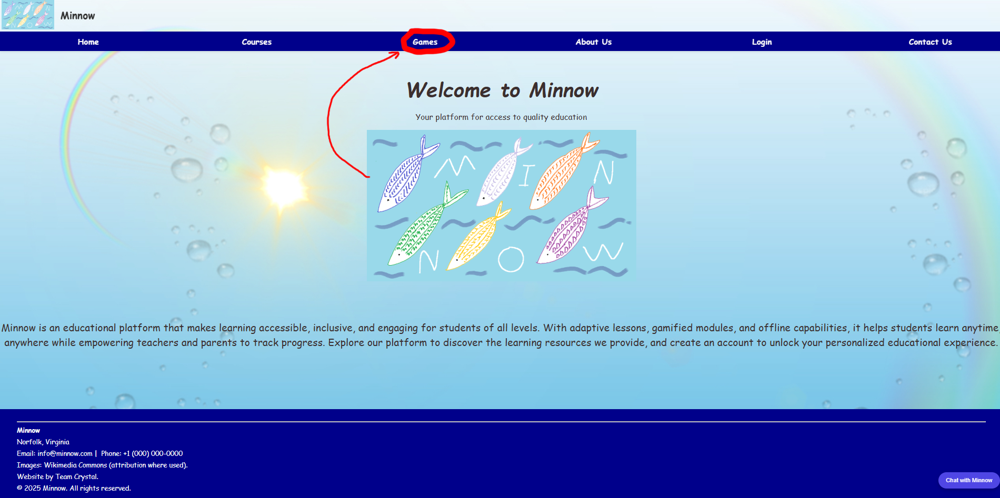
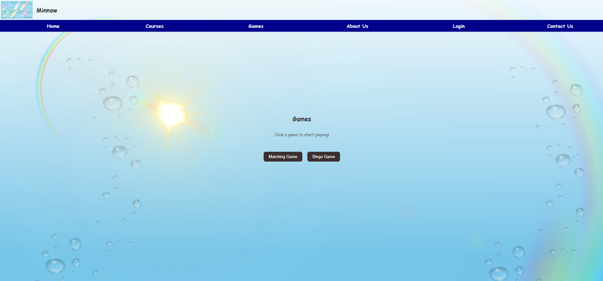

Authors: Stanley Synenko, Maddie Ray

Figure 1: Our landing page. Here, multiple options for interacting with the site can be selected.
Circled in red is the button labeled “Games.” Clicking this button will take you to the Games page.
To access the Games page:

Figure 2: The Games page. In the center is the label showing Games, with two buttons below it.
The button labeled "Matching Game" will take you to a science-based matching game on click.
The button labeled "Bingo Game" will take you to a math-based bingo game on click.
To progress to either game:
Find about both games on their own Wiki page.